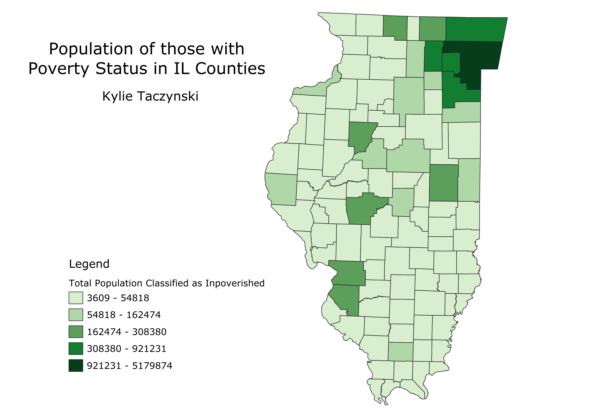

Homework 6: Census data choropleth
Kylie Taczynski
The map below utilizes data from the US Census database. It represents the total population, within each Illinois county, that has been assigned poverty status.

Data used for this project
CSV dataset
Link to geoJSON